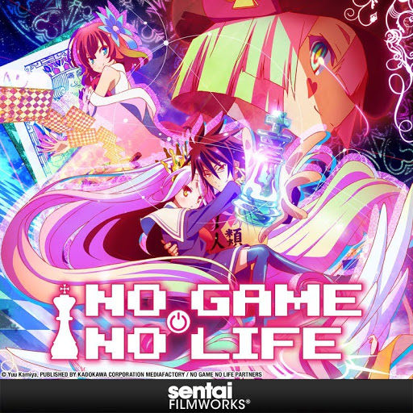

Lifestyle
 Fitness
Fitness
Food
 Travel
Travel
My social media
Quick Poll
What content would you like?
Welcome to my e-portfolio! I am a software engineering student with a passion for web development and design.
I love creating beautiful and functional websites that provide a great user experience.
I am a student at the UUM, studying in Bachelor of Science with Honours (Information Technology) with the goal of graduating with first-class honors and become a professional programmer who develops a software that able to solve real-world problems. I have several academic and professional qualifications. I completed both my SPM and STPM education. Additionally, I earned the Cisco CCNA: Introduction to Networks certification, which introduced me to the fundamentals of networking and internet protocols. I also hold a Pearson LCCI Level 2 Certificate in subject Accounting at SPM. I grasp of several programming languages that including Java, JavaScript, Flutter (Dart), HTML, and CSS. I’m also master in problem-solving, team collaboration, and using tools like Git to manage code effectively. What makes me unique: I believe in letting nature take its course, it keeps me calm, focused, and persistent, it keeps me calm, focused, and persistent, let me grow align with my goals without stress and doubt.
During a group project, I worked as a Java Developer to develop a Hospital Appointment Management System using Java and MySQL. Our goal was to create a desktop application that allowed users to manage patient appointments, , and doctor schedules efficiently. I was responsible for implementing core functionalities and integrating the system with a MySQL database. Through this project, I gained a strong understanding of object-oriented programming (OOP) and sharpened MySQL skills, while also improving my ability to collaborate within a team.
Fitness
Food
Travel
What content would you like?
 Favourite Anime
Favourite Song